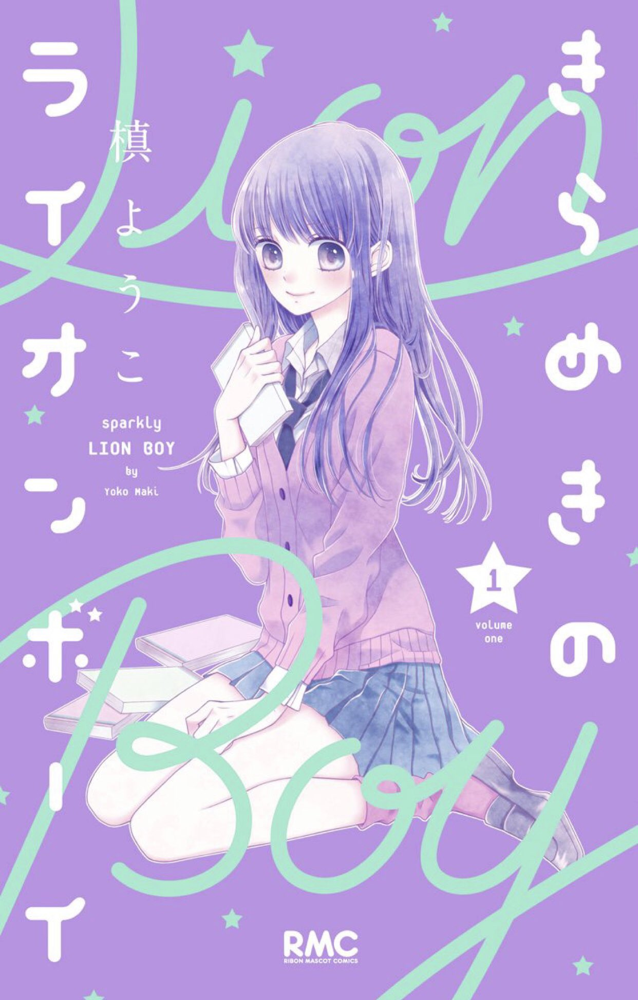

INFORMACIÓN
Titulo:
Kirameki No Lion boy
Autor:
Maki Youko
Genero:
Romance, Drama, Vida Escolar, Comedia
Miwa Takanose, es una estudiante de primer año. Es una hermosa chica que le gusta el manga, pero torpe la mayor parte del mundo real. Su amo y aficion por el mundo 2D llega hasta el punto de que casi no se preocupa por el mundo a su alrededor y no cree en el amor. Un día, conoce a Kiriatsu Nakajou, una "ikemen" (buen chico) que se parece al protagonista de su manga favorito. Kiriatsu es popular porque es indiferente, frío y difícil de descifrar, aunque en realidad se trata de un cabeza hueca. Sus caminos se entrelazan cuando Kiriatsu decide proteger a Miwa de un chico que estaba intimidandola.